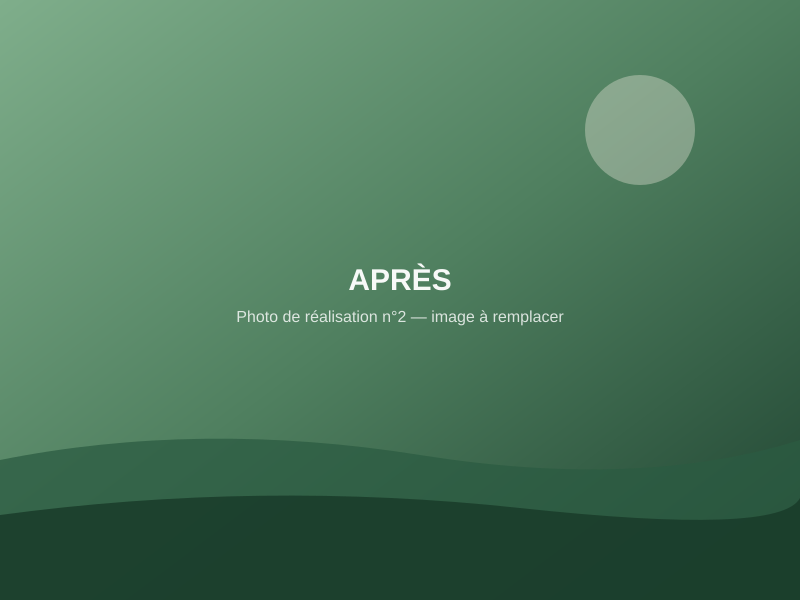
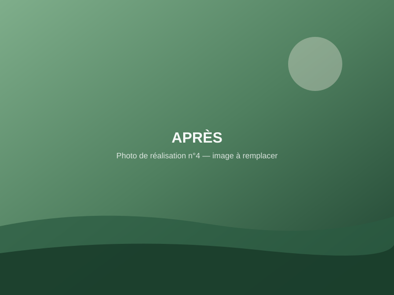
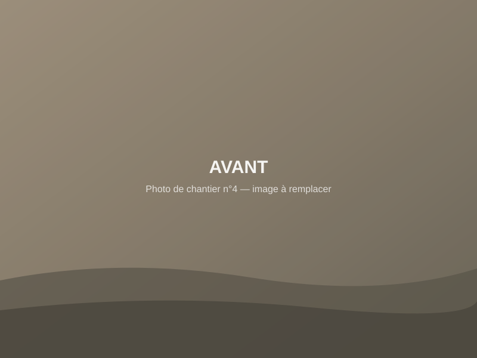

Avant
Après
Jardin contemporain avec terrasse
Refonte complète : terrasse en pierre, massifs structurés, éclairage discret et pelouse en rouleau.
Création de jardins, terrasses et aménagements extérieurs à Pau et dans les environs. Un travail soigné, des matériaux durables, un interlocuteur unique.
05 59 00 00 00 Réponse rapide aux heures ouvréesFaites glisser le curseur sur chaque photo pour comparer l'avant et l'après. (Images d'illustration — les photos des vrais chantiers prendront leur place.)
Refonte complète : terrasse en pierre, massifs structurés, éclairage discret et pelouse en rouleau.

Terrasse sur plots avec garde-corps inox, prolongée par un escalier paysager.
Allée en pavés granit avec bordures, drainage intégré et plantations latérales.


Clôture composite gris anthracite sur muret, portillon assorti, haie de charmes en doublage.
Massifs de vivaces et fougères sous arbres existants, paillage minéral et bordures acier.
Préparation du terrain, arrosage automatique enterré et gazon en rouleau posé en deux jours.
De la conception aux finitions, nous prenons en charge l'ensemble de votre aménagement.
Conception et réalisation de votre jardin, de l'esquisse aux plantations : terrassement, structure, végétaux, finitions.
Terrasses en bois, composite ou pierre naturelle, pensées comme une vraie pièce à vivre extérieure.
Allées carrossables ou piétonnes : pavés, gravier stabilisé, béton désactivé, bordures propres et durables.
Clôtures, portails et occultations : intimité, sécurité et esthétique alignées sur votre maison.
Haies, massifs, arbres et vivaces choisis pour votre sol et votre climat, plantés dans les règles de l'art.
Gazon semé ou en rouleau, préparation soignée du sol pour une pelouse dense et durable.
Systèmes d'arrosage intégrés et programmés : un jardin en pleine santé, sans corvée.
Tonte, taille, débroussaillage et soins réguliers pour garder votre extérieur impeccable toute l'année.
Nous partons de vos usages — recevoir, jouer, jardiner, vous détendre — avant de parler matériaux.
Chaque poste est expliqué. Vous savez ce que vous payez, et pourquoi.
Choisis pour votre sol, votre exposition et votre budget — pas pour la photo du catalogue.
Dates annoncées, terrain respecté, nettoyage en fin de chantier. Vos voisins ne nous détesteront pas.
En quelques minutes, via le formulaire ci-dessous ou par téléphone. Photos bienvenues.
Type de travaux, terrain, budget : nous vérifions que nous pouvons bien vous répondre.
Un appel pour préciser, puis une visite sur place quand le projet le demande.
Un devis détaillé et expliqué, avec un calendrier réaliste.
Chantier planifié, tenu et livré propre — et nous restons joignables ensuite.
Démonstration — aucune donnée n'est envoyée ni conservée
05Devis gratuitQuelques questions, deux minutes montre en main. Plus votre demande est précise, plus notre première réponse le sera aussi.
Étape 1 sur 8
Quel est votre projet ?
Choisissez ce qui s'en rapproche le plus.
Où se situe votre projet ?
Pour vérifier que vous êtes bien dans notre zone d'intervention.
Quelle surface, approximativement ?
Une estimation suffit — cela nous donne l'échelle du chantier.
Quel budget envisagez-vous ?
Cela nous permet de vous orienter vers une solution cohérente avec votre projet.
Quand souhaitez-vous commencer ?
Pour intégrer votre projet dans notre planning de chantiers.
Décrivez-nous votre projet.
Vos envies, les contraintes du terrain, ce qui existe déjà… tout est utile.
Ajoutez quelques photos
Facultatif, mais très utile : l'état actuel du terrain nous aide à préparer un premier avis précis.
Démonstration : vos photos restent dans votre navigateur et ne sont envoyées nulle part.
Vos coordonnées
Pour vous répondre — rien d'autre. Pas de démarchage, pas de revente de données.
En mode réel, vous recevriez cette demande immédiatement, avec tous les détails ci-dessous.
Votre commune n'apparaît pas ? Demandez-nous — selon le projet, nous élargissons volontiers.
Exemple : « Travail soigné du début à la fin, des conseils précieux sur le choix des végétaux. Le jardin est magnifique. »
Exemple : « Chantier propre, délais tenus, équipe agréable. La terrasse a transformé notre façon de vivre dehors. »
Exemple : « Très bonne écoute de nos envies et un résultat au-delà de nos attentes. Nous recommandons. »
Cartes d'exemple illustrant l'emplacement — les vrais avis Google du client apparaîtront ici.
Nous intervenons à Pau et dans un rayon d'environ 30 km : Lescar, Billère, Jurançon, Lons, Idron, Gan… Pour un projet un peu plus éloigné, le plus simple est de nous demander.
Oui. Après votre demande, nous étudions votre projet et, si nécessaire, nous nous déplaçons pour prendre les mesures. Le devis est gratuit et sans engagement.
Les deux. Notre cœur de métier est la création et l'aménagement, et nous proposons également l'entretien régulier des jardins que nous réalisons.
Tout dépend de la surface, des matériaux et de la complexité du terrain. C'est précisément pour cela que notre formulaire vous demande quelques détails : il nous permet de vous répondre avec des ordres de grandeur réalistes plutôt qu'un prix au hasard.
Comptez le temps de l'étude et du devis, puis la planification du chantier selon la saison. Nous vous annonçons un calendrier réaliste dès la proposition.
Oui, et c'est même recommandé : quelques photos de l'existant nous permettent de préparer un premier avis beaucoup plus précis avant la visite.
Oui : une haie, quelques plantations ou une petite allée sont des projets bienvenus, selon notre planning du moment.
Notre activité principale concerne les particuliers, mais nous étudions les demandes de professionnels et de copropriétés au cas par cas.
Décrivez-le en deux minutes, ou appelez-nous directement — nous vous dirons simplement ce qui est possible.